Supertitle Cuer — STQ for short — makes running opera supertitles calm and simple. It works right from the score: you mark numbered cues on the score PDF where each title should appear, pair them with your titles, and during the performance one key — or a clicker — puts the next title on the projector, in time with the music. Version 2 can also listen to the performance and count down to every cue.
This guide starts with a Quick start that walks through a real project, the Anvil Chorus from Verdi's Il trovatore, from an empty window to titles on the screen. The chapters after it explain every button and panel in detail — dip in whenever you want to know more. Enjoy the show!
Quick start: titles on the screen in ten minutes
From an empty window to titles on the projector — easier than it sounds, and done in the order most people work: titles first, then the score, then the cues. (Any order works — the cues and titles pair up by number.)
1. Start
Open Supertitle Cuer. The score area on the left is empty; the slides — the titles — will go on the right.
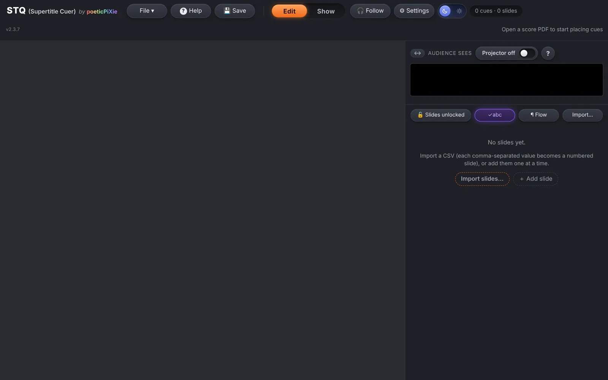
2. Paste in all the titles
Click Import… above the slides. Paste the titles into the box, separated by commas (put each one in "double quotes" if it contains a comma, and use | for a line break inside a title) — or choose a .csv or .txt file. Click Import.
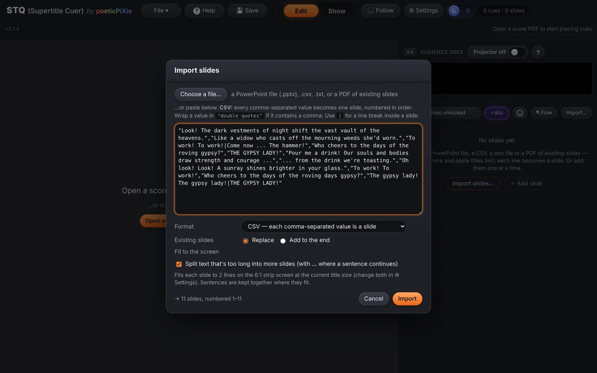
Each title becomes a numbered slide. Titles too long for the screen are split for you (see Bringing in titles).
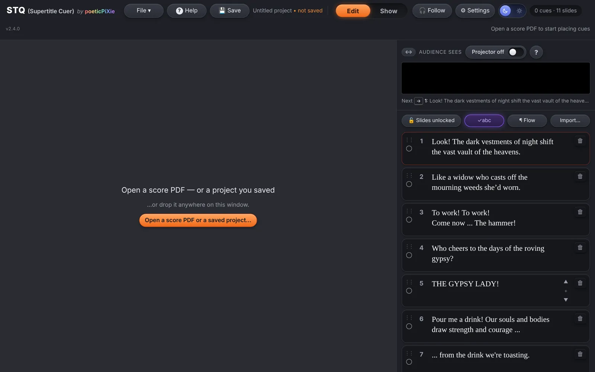
2b. Or: paste plain text into Flow mode
No commas or quotation marks needed: one title per line (or simply the libretto as it is) works too.
Before placing any cues, click ¶ Flow above the slides.
Click ＋ Add slide (or into the first slide) and paste the text.
The text fills the slides by itself: sentences stay together, each fits the screen, and a long sentence continues on the next slide with “…”.
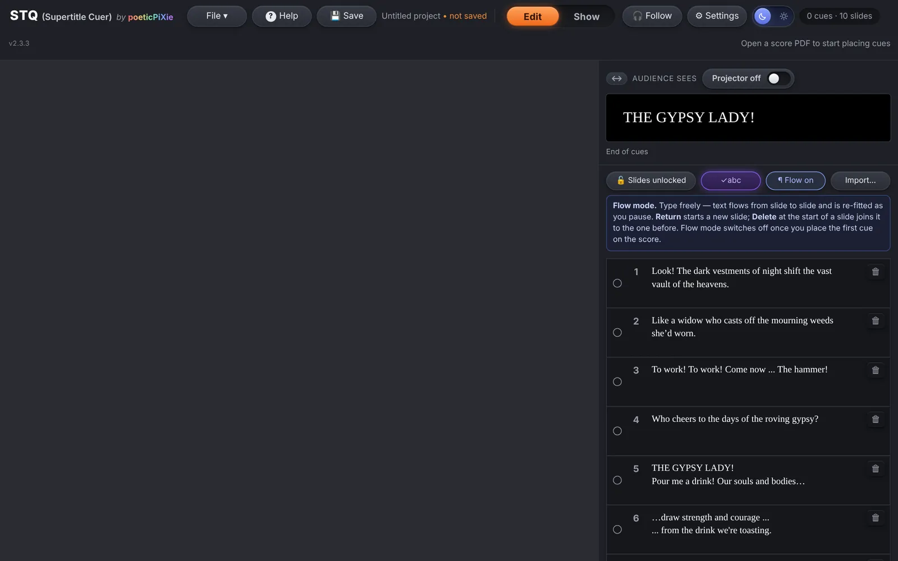
⌨ In Flow mode
Returnstart a new slide here
Shift+Returnline break inside a slide
Delete at the startjoin with the slide before
Flow mode switches off by itself once you place the first cue, so the titles never move afterwards. Plain text also works through Import… with Format: Text — then every line becomes exactly one slide.
3. Add the score
Click File ▾ → Open… and choose the score PDF, or drop it onto the window. The slides turn striped and say “no cue” — they are waiting for their cues.
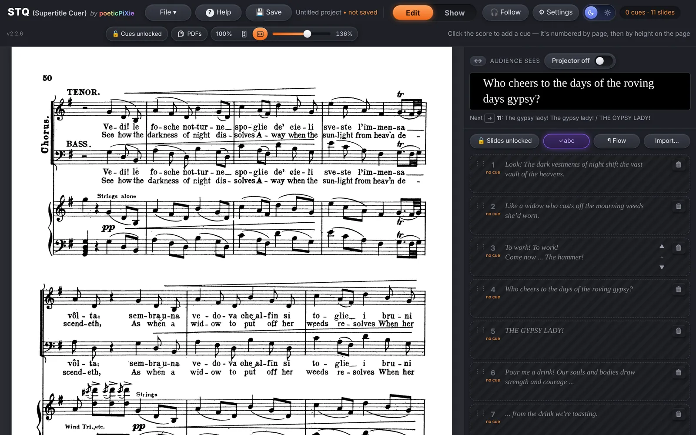
4. Click the cues onto the score
With Edit selected, click the score wherever a title should change. Each click adds a numbered red circle, and the slide with the same number is now cued.
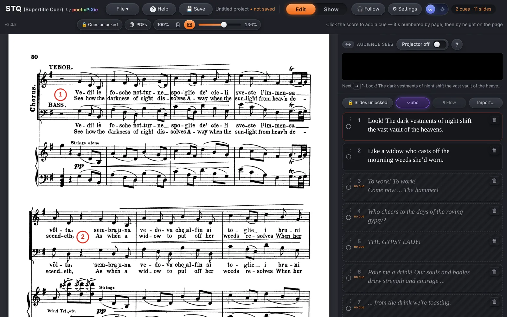
⌨ Cues on the score (Edit mode)
clickadd a cue
←↑→↓nudge the selected cue (Shift: bigger steps)
Delete or right-clickdelete the selected cue
⌘Zundo
Cues are numbered by their place in the score — page, then top to bottom, then left to right — so you can add them in any order. Drag one to move it; right-click one to delete it.
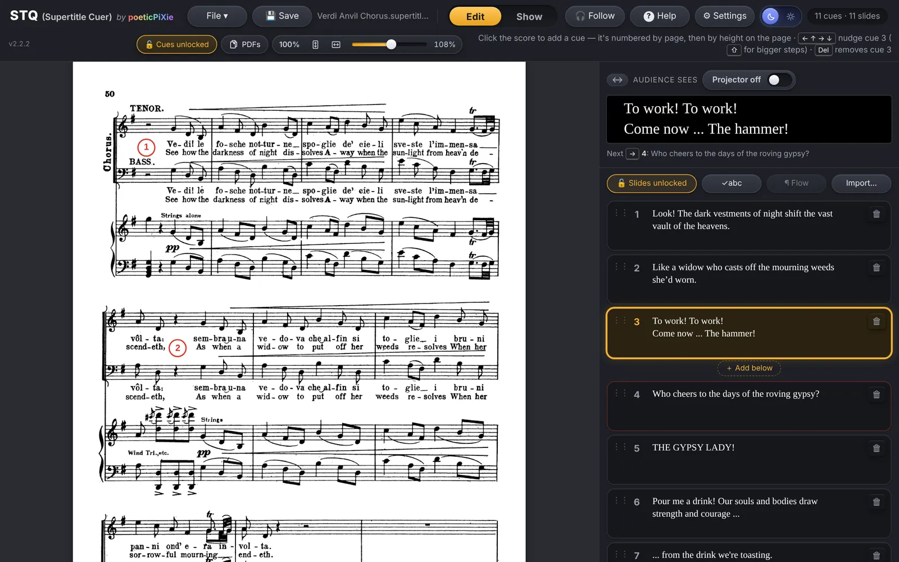
5. Choose the look, and save
Click ⚙︎ Settings and pick the Screen shape of your projector (16:9, 4:3 or the 6:1 strip), the font, size and colours; the Audience sees preview shows the result. Then press ⌘S: score, cues, titles and settings are saved in one .supertitles file.
6. Run the show
Connect the projector as an extended screen (see The quickest way to connect your projector) and flip the Projector switch (above Audience sees) to on. Click Show and press → or Space — or a presentation clicker — for each title. ← goes back and B blanks the screen.
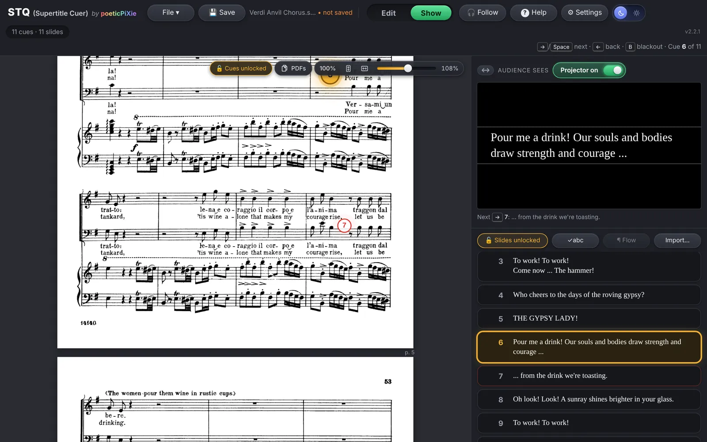
⌨ Running the show (Show mode)
→SpacePage Downnext title
←Page Upprevious title
Bblackout on / off
Homeback to before cue 1
Want a countdown to every cue? Record a rehearsal with ● Record and switch on Follow the music.
How it works (it's simpler than it sounds)
If you can follow a score, you can run supertitles with STQ. Here's the whole idea in one minute.
Supertitle Cuer pairs two things: cues — numbered circles you place on the score where each title should change — and slides — the titles themselves. Slide 1 goes up at cue 1, slide 2 at cue 2, and so on. During the performance you follow the score, and when the music reaches the next circle you press one key; the projector shows the next title.
Cues are always numbered by where they are in the score, never by the order you placed them: first by page, then from the top of the page down, then left to right along a line of music. Add a cue anywhere and the ones after it renumber by themselves, and the slides move with them.
The whole production — the score (even several PDFs), the cues, the titles, the display settings and any reference recordings — is saved in one .supertitles file.
Getting Supertitle Cuer onto your computer
A couple of minutes, once — then it's just there whenever you need it.
Mac
Installing on a Mac takes one line in the Terminal app. To open it, press ⌘Space, type Terminal and press Return. Then follow the branch that fits you. Not sure if you have Homebrew? Type brew --version and press Return: a version number means yes, “command not found” means no.
It asks for your Mac's password (nothing appears as you type — that's normal) and may take a few minutes the first time. When Homebrew finishes it shows “Next steps”: do them too, so that brew also works in new Terminal windows later.
Rather not install Homebrew? Download the .dmg from the Releases page of github.com/Poetic-PiXie/supertitle-cuer (arm64 for Apple Silicon Macs — M1 and later — or x64 for Intel), drag the app to Applications, and run just the last part in Terminal:
Why the xattr part? STQ isn't signed with an Apple Developer ID, so macOS blocks it as “damaged” or “can't be opened” until that quarantine flag is removed. Running it when it isn't needed does no harm.
Download Supertitle_Cuer-Setup-….exe from the Releases page and run it. If Windows shows “Windows protected your PC”, click More info → Run anyway.
No installation: the single HTML file
Supertitle_Cuer.html is the whole app in one file. Double-click it to run it in Google Chrome on any computer; it opens and saves the same .supertitles files. The desktop app adds a few things the browser can't do:
double-clicking a .supertitles file opens it;
the projector window goes full screen on the second screen by itself;
the computer and both screens stay awake during Show mode;
saving needs no browser prompts, and closing asks about unsaved changes;
spelling suggestions, synonyms and Look Up in the right-click menu.
A quick tour of the window
Everything you need sits on one screen: the score on one side, your titles on the other, and the audience's view right above them.
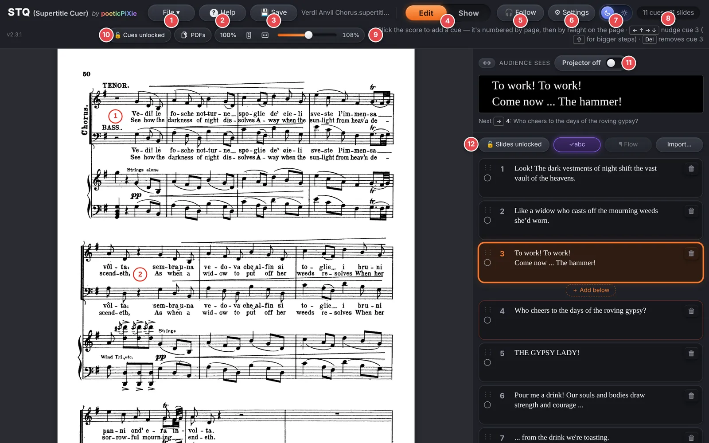
File menu — new, open, save, export and import (see Saving your work).
💾 Save and the project's name. “• not saved” means there are unsaved changes.
Edit / Show — Edit to place cues and write titles, Show to run the performance.
🎧 Follow — listen to the music and count down to the next cue.
? Help — this guide, searchable.
⚙︎ Settings — the look of the titles, the screen shape and cue size.
The Night / Day switch — dark or light look for the app.
How many cues are on the score and how many slides there are.
The hint line — what clicking and the keys do right now.
The score controls, centred over the score: lock the cues, manage PDFs, and the view size (100 %, fit height, fit width, or any size on the slider).
Audience sees — exactly what is on the projector (or what will be), with the Projector switch above it: flip it on to open the audience window. It glows green and gently breathes while the projector is live.
The slides (supertitles), with the slides lock, spelling, flow mode and import.
The ↔ button above the preview swaps the two sides, so the score can be on the right and the slides on the left. Each computer remembers its choice.
⌨ Anywhere
F1 or ⌘?open this Help
⌘,Settings (desktop app)
⇧⌘E / ⇧⌘REdit / Show mode (desktop app)
💡 Tips
Hover over any button for a moment: a tooltip tells you what it does.
The hint line under the toolbar changes with what you're doing — glance at it whenever you're not sure what a click or a key will do.
Prefer the score on the right? Click ↔ once; STQ remembers your choice on this computer.
On a small laptop screen, zoom the score with − / Fit / + above it; the titles and the preview stay as they are.
Working on several productions? Each one is its own .supertitles file — open, save and switch between them whenever you like.
Everything in the toolbar
A handful of buttons, each with one clear job.
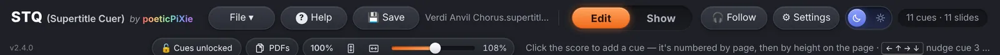
File ▾
New project, Open, Save, Save As, Save As PDF, Export printable score, Import and Export slides, and two clean-up commands: Remove all cue markers and Remove all slides. In the desktop app the same commands are in the menu bar.
💾 Save
Saves everything into the project file (⌘S). The first time, it asks where.
Edit / Show
The two modes. In Edit a click on the score adds a cue and the slides can be typed in. In Show the keyboard runs the titles and nothing can be changed by accident. ⇧⌘E and ⇧⌘R switch in the desktop app.
🎧 Follow
Reference recordings and the live countdown. While following it reads 🎧 Following; while recording, ● Recording.
? Help
This guide. Type in its search box to find any topic.
⚙︎ Settings
Screen shape, font, style, colours, alignment, text size, vertical position, side margins and cue circle size (see Making the titles look just right).
☾ ☀ Night / Day
The moon-and-sun switch flips the whole app between the Night look (dark — kind to your eyes in a dark theatre, the default) and the Day look (light, for rehearsal rooms and daylight). It is remembered on this computer and never changes the titles on the projector.
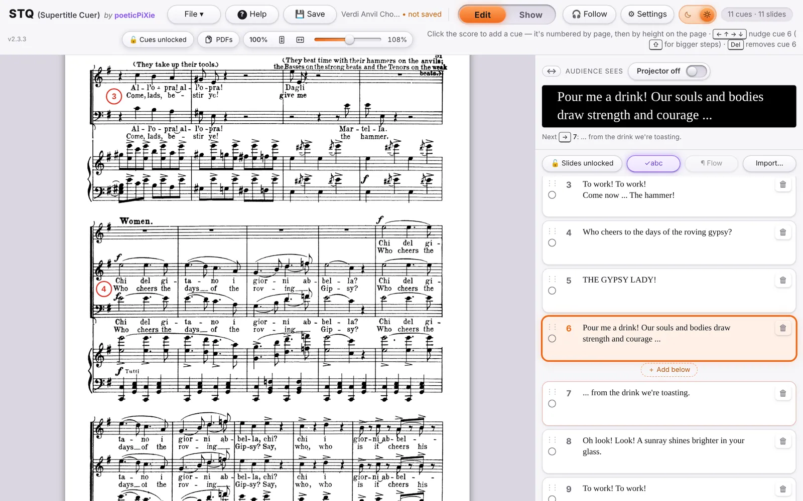
The Day look: the same app in light colours, for rehearsal rooms and daylight.
The Projector switch lives at the top of the Audience sees panel, right above the picture it sends out: Projector off / Projector on (⌘P in the desktop app). While it is on it glows green; switching it off during Show mode asks first.
Under the toolbar, the hint line always says what a click or a key will do at this moment — for example which cue the arrow keys would nudge, or the Show-mode keys and the current cue number.
Cues: one click on the score
This is the heart of it. Click where a title should change — that's a cue. STQ numbers and orders them for you, so you never have to.
Opening a score
Open a PDF with File ▾ → Open…, by dropping it on the window, or with the button in the empty score area. A score opened into an existing project replaces the old score but keeps the slides. Several PDFs (for example one per act) can be combined — see Several PDFs.
The view buttons above the score set the page size: 100% shows it at actual size, the next button fits the whole page height in the panel, the third fits the page width. The slider beside them picks any size from 25 % to 400 %, and the number shows the current size.
⌨ View size
⌘0actual size (100 %)
⌘1fit the page height — a whole page at a glance
⌘2fit the page width
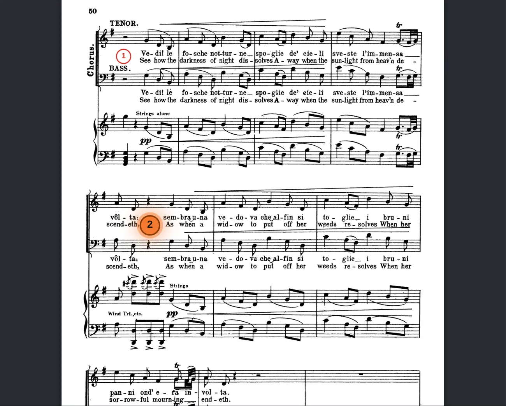
The gold cue is the current one; in Show mode the next one pulses. A dashed circle would mean a cue that has no slide yet.
Placing cues
In Edit mode, click the score where a title should appear. The new cue gets a blue ring, and the hint line says which number it got. If it lands before existing cues, they renumber and a message says so.
How cues are numbered
By page first, then by rows from the top, then left to right. Two cues count as being on the same row unless one is clearly higher: its centre has to be at least 1.5 × the circle's radius above the other's. So a cue placed slightly higher at the end of a line still comes after the cues to its left.
Selecting, moving and deleting
Select a cue by clicking it. Its slide is selected too, and the projector (if open) shows that title.
Move it by dragging, or nudge it with the arrow keys: 5 pixels per press, 25 with Shift. A burst of nudges is one undo step. If the new place changes its number, a message says so.
Delete it with a right-click, or select it and press Delete. Deleting a cue never deletes a slide: the slides keep their order, so from there on each slide pairs with the next remaining cue.
Deselect (in Edit mode) by clicking any empty space outside the score pages and slides, or with Esc.
⌨ Cues
←↑→↓nudge the selected cue 5 px — Edit mode, cues unlocked, after clicking the score
Shift + arrowsnudge 25 px
←→previous / next cue — in Show mode, or while the cues are locked
Deletedelete the selected cue
Escdeselect
Locking the cues
The score's own controls sit in the top bar, centred over the score (they move with it when you swap sides). 🔓 Cues unlocked (gold) turns into a red 🔒 Cues locked with a click. When locked, clicking the score only selects cues, and nothing can add, move or delete them by accident.
🔒 Show locks, Edit unlocks. Switching to Show locks both the cues and the slides, so nothing can change during the performance; switching back to Edit unlocks them both. You can still flip either lock by hand at any time — that never changes the mode. Opening a saved project also locks both.
Cue circle size
⚙︎ Settings → Cue circle size (2 to 6, default 4) changes how big the circles are, on screen and in the printable score.
💡 Tips for placing cues
Put each cue on the note or syllable where the title should appear — usually a beat before the singer starts the line, so the audience reads as they hear.
Repeated text? Give each repeat its own cue and its own title (even if the words are the same), so the count never drifts during the show.
Long instrumental passages need no cue: the last title stays up, or add a blank slide to clear the screen.
Work through the score page by page with the piano reduction open, or listen along with a recording — cues placed while hearing the music land best.
When the cues are right, lock them. The red 🔒 Cues locked button makes stray clicks harmless, and Show mode locks them for you anyway.
Print the score with File ▾ → Export printable score for the stage manager or a second operator: same numbers, same places.
Several acts? Several PDFs — no problem
Keep each act, number or insert as its own PDF and put them in order like cards on a table. Your cues and titles follow along.
A score can be made of several PDFs — Act 1, Act 2, an inserted aria. Click PDFs above the score to see them as cards.
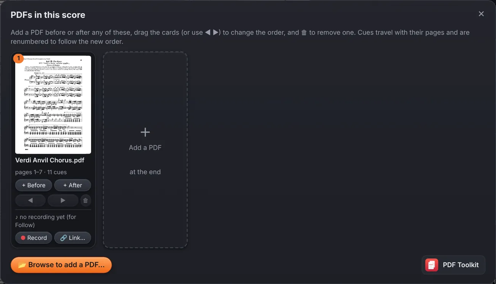
Add a PDF before or after any card with + Before / + After, at the end with the last card, or with 📂 Browse to add a PDF….
Reorder by dragging the cards, or with ◀▶. Each PDF's cues travel with their pages and are renumbered, and their supertitles move with them so every title stays with its cue.
Remove a PDF with 🗑. Its cues go with it; a question asks whether to delete its supertitles too (unticked: they stay and pair with the cues that follow).
While cues are locked, PDFs can't be added, moved or removed (that would renumber cues); the panel offers 🔓 Unlock to make changes.
Each card also has ● Record and 🔗 Link… for that PDF's reference recording, and shows how many of its cues are timed.
The PDFs are merged into one score inside the project; Undo brings back a removed or moved PDF.
Preparing PDFs with the PDF Toolkit
Scores rarely arrive exactly as you need them: the whole opera in one file when you only need Act 2, pages scanned sideways, an aria cut from the edition, or an insert from a different score. Supertitle Cuer adds and orders whole PDFs; the PDF Toolkit, poetic PiXie's free companion, prepares them first.
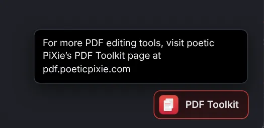
Click PDF Toolkit at the bottom right of the PDFs panel. It opens pdf.poeticpixie.com in your browser; everything happens on your own computer, and your files are never uploaded. The tools that matter for a score:
Extract pages
Keep only the pages you need — one act, one number — as a new PDF.
Split PDF
Cut a complete score into several files, for example one per act, so each act can be its own PDF here (with its own reference recording for Follow).
Delete pages
Take out blank pages, title pages or numbers that are cut in your production, so the score matches what is performed.
Rotate pages
Turn pages that were scanned sideways or upside down.
Merge several PDF files
Join files into one, when you'd rather manage one PDF than many.
Combine images into a PDF
Turn photos or scans of score pages (JPEG, PNG) into a PDF that Supertitle Cuer can open.
Save the result, then add it with + Before, + After or 📂 Browse to add a PDF…. Do the trimming before you place cues on those pages: removing pages from a PDF that is already in the project means removing and re-adding the whole PDF, and its cues go with it.
Writing and polishing your titles
Your titles live on the right, one card per title. Typing, reordering and fixing them is as easy as in any notes app.
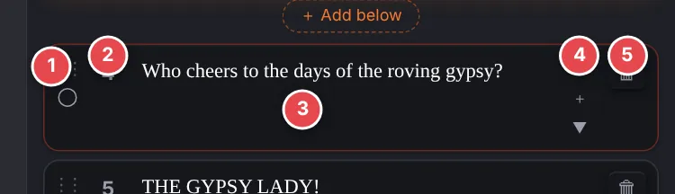
Grip — drag to move the slide.
Number — the cue it belongs to. Click it to show this slide.
Text — click and type. Return starts a new line within the slide.
▲ ＋ ▼ — move up, insert an empty slide after it, move down.
🗑 — delete the slide.
Add slides with ＋ Add slide at the end of the list, ＋ on a card, or + Add below under the selected slide.
Delete with 🗑. It asks first, and offers to delete the slide's cue too (unticked by default).
Select a slide by clicking it; the projector and the score follow. After clicking in the list, ↑↓ step through the slides. While typing, ↑ on a slide's first line and ↓ on its last line carry on into the neighbouring slide.
Several at once: click one slide, then Shift-click another to select the range. ▲ / ▼ (on a selected card or in the selection bar) or dragging one of them moves the whole block; 🗑 Delete… deletes them together. Any other click ends the selection.
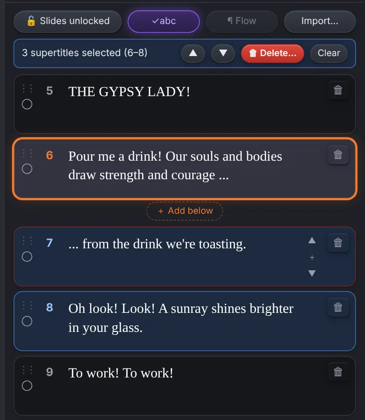
Lock the slides with 🔓 Slides unlocked above the list. While it is red and reads 🔒 Slides locked, nothing can change by accident: no typing, no moving, adding, deleting or importing. You can still click a slide to select it. Click the button again to unlock.
⌨ Slides
↑↓previous / next slide — after clicking in the slide list
↑ on the first line, ↓ on the lastwhile typing: carry on into the neighbouring slide
Shift-clickselect a range of slides
Deletedelete the selected range (asks first)
Escstop typing / clear the selection
right-click a wordspelling suggestions, synonyms
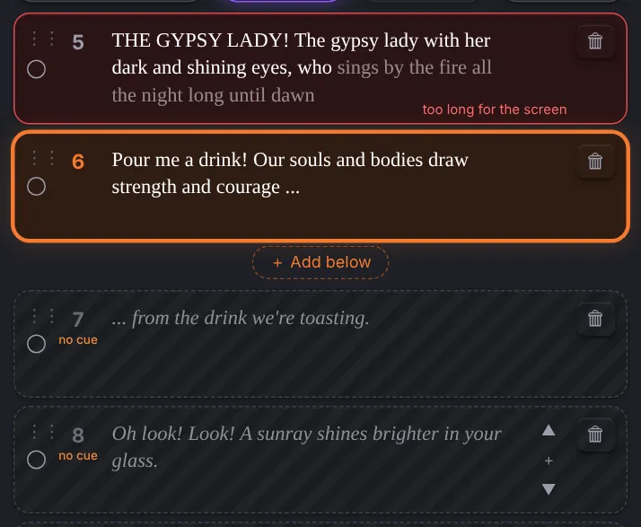
What the colours mean
Gold border — the current slide (on the projector).
Red, with “too long for the screen” — the text needs more lines than the screen has (2 on the 6:1 strip, 6 on 16:9 and 4:3). The words that won't fit are greyed out; the projector shows only what fits. Shorten the text or split it.
Striped, “no cue” — there are more slides than cues; place a cue on the score for it.
Spelling and synonyms
Misspelled words get a red underline while you edit. Right-click one for suggested corrections, Learn (add it to your dictionary) or Ignore Spelling. In the desktop app, right-clicking a selected word also offers English Synonyms, and on a Mac Look Up opens the system dictionary and thesaurus. ✓abc above the slides (or Edit → Check Spelling While Typing) switches checking off and on. On Windows, choose the language in Settings → Spelling language; a Mac uses its own languages.
Bringing in titles you already have
Already have the translation in a document or spreadsheet? Bring it all in at once — no retyping.
Choose a file… opens a .csv, a .txt, or a PDF of existing slides (its text is read page by page) — or paste the text into the box.
Format: CSV — every comma-separated value becomes one slide, numbered in order. Put a value in "double quotes" if it contains a comma. | makes a line break inside a slide.
Format: Text — every line becomes one slide.
Existing slides: replace them, or add the new ones to the end.
Tip: write your titles in a spreadsheet
Excel, Numbers and Google Sheets make a comfortable writing desk for titles: one cell per title, top to bottom in column A — easy to read, reorder and share with a translator.
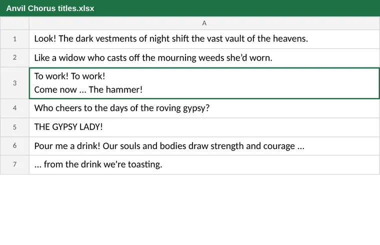
One title per cell. Cell A3 holds a two-line title.
Type one title per cell, all in column A. Commas and quotation marks inside a title are fine.
For a line break inside a title, press ⌃⌥Return in Excel on a Mac, or Alt+Enter on Windows (Numbers and Google Sheets have a similar shortcut). The break carries over to the slide.
Save or download the sheet as CSV (in Excel: File → Save As → CSV UTF-8, which keeps accents intact).
In STQ, click Import…, choose the CSV file and click Import. Each cell becomes one slide, in order.
A sheet with numbers in column A and the titles in column B works too — STQ notices the numbering and uses the text column.
Fit to the screen
With Fit to the screen ticked, text that is too long for one slide is split over as many as it needs, up to the screen's line limit (6 lines on 16:9 and 4:3, 2 on the 6:1 strip). Sentences stay together when they can. A sentence that doesn't fit in what is left of a slide starts there and continues on the next slide, with “…” at both ends — unless fewer than two of its words would fit, then it starts the next slide.
Export slides (CSV) in the File menu writes all titles to a CSV file, for editing elsewhere or sharing with a translator.
Flow mode: paste the libretto, get the slides
The fastest way from a libretto to finished slides: paste the text and watch it lay itself out, slide by slide.
¶ Flow above the slides turns the slide list into one continuous text: type or paste the libretto and it fills the slides by itself, re-fitting as you pause.
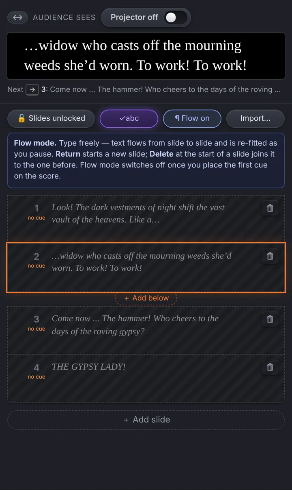
Paste plain text — one title per line, or the libretto as it is; no commas or quotation marks needed.
Sentences stay together, every slide fits the screen, and a sentence that runs over continues on the next slide with “…”.
⌨ In Flow mode
Returnstart a new slide at the cursor
Shift+Returnline break inside a slide
Delete at the very start of a slidejoin it to the slide before
🔒 Flow mode locks once cues are on the score. As soon as the first cue is placed, Flow mode switches off and its ¶ Flow button is greyed out, so titles that already belong to cues can never move. To use Flow mode again, remove all cues (File ▾ → Remove all cue markers…) — or keep editing the slides one by one, which always works.
💡 Tips
The smoothest order: write or paste the whole libretto in Flow mode, read through the slides, and only then place the cues.
Want a title to begin on a fresh slide no matter what? Put the cursor there and press Return.
For a line break inside a slide — a verse line, say — use Shift+Return.
A red slide is too long for the screen: shorten it, or press Return where it should split.
Need to change words after the cues are placed? Just click a slide and type — editing one slide at a time always works.
Making the titles look just right
A few switches and sliders, and the preview shows every change instantly — no guessing what the audience will see.
The Settings window can be dragged anywhere by its title bar, so you can watch the Audience sees preview while you adjust (double-click the title bar to put it back in the middle). Every change applies at once; Done just closes the window.
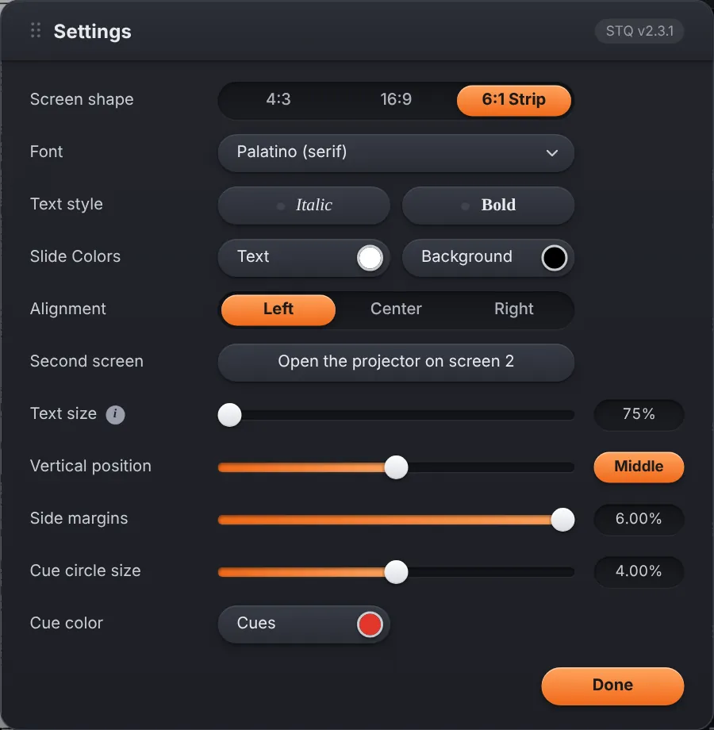
Screen shape
16:9 fills a widescreen projector; 4:3 uses a centred 4:3 area; 6:1 Strip is a full-width band one sixth as high as it is wide, for two lines of titles above the stage.
Font, Text style, Colours
Five fonts (Georgia, Palatino, Garamond, Helvetica, Verdana), italic and bold, text and background colour.
Alignment
Left (default), center or right.
Text size
75 % to 100 % (new projects start at 80 %). 100 % is the built-in layout (titles about 137 pixels high on an HD projector); at smaller sizes the space gained is shared evenly between the margins and the line gaps. Hover over the little i for the exact numbers. The size never changes with the amount of text.
Vertical position
A slider from top (left) to bottom (right), starting in the middle. The button beside it shows how far up or down the titles sit; click it to put them back in the Middle. On the 6:1 strip it moves the whole strip up or down the projector screen.
Side margins
2 % to 6 % of the width on each side (new projects start in the middle, at 4 %).
Cue circle size
2 to 6 (default 4, the middle).
Spelling language
Windows desktop app only.
Second screen
Browser version only: lets Chrome open the projector window straight on the second screen.
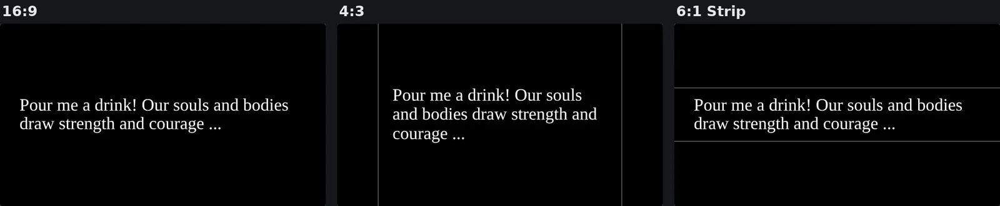
With the projector on, the preview shows the whole projector screen; thin lines (on your screen only) mark the 4:3 area or the 6:1 strip.
💡 Tips for titles people can read from the back row
White (or warm off-white) on black is the classic for a reason: the black disappears in a dark theatre and only the words float above the stage.
Serif fonts like Georgia and Palatino read easily at a distance; Helvetica and Verdana look cleaner on a bright LED wall.
Start at 80 % text size: the extra breathing room between the lines makes two-line titles much easier to take in at a glance.
Walk to the last row during a technical rehearsal and read a few titles. If you squint, go up a size or switch to bold.
On a 6:1 strip above the proscenium, keep titles short — two lines is all there is, and the audience is looking up.
Drag the Settings window to one side so the Audience sees preview stays in view while you try things.
The quickest way to connect your projector
One cable and one setting, and you're ready — here's how, step by step.
The projector (or TV) must be a second, extended screen — not a mirror of yours, or the audience would see the whole app. A cable is the reliable way: HDMI, or USB-C to HDMI on laptops with only USB-C. Wireless casting lags and can drop out.
Mac
Plug in the projector and turn it on.
Open System Settings → Displays. The projector appears next to your built-in screen (if not, unplug, wait a few seconds and plug in again).
Click the projector and set Use as to Extended display, not Mirror.
Plug in the power adapter. The desktop app keeps the Mac and both screens awake by itself in Show mode.
Turn on Do Not Disturb in Control Center (the switches icon at the top right of the menu bar) so no notifications pop up.
Flip the Projector switch above Audience sees to on. The desktop app opens it full screen on the projector; if it lands on your own screen, choose View → Move Projector to Second Screen (⇧⌘P). In the browser version, drag the window onto the projector and press F (or double-click it).
Test: click back in the main window, choose Show and press →.
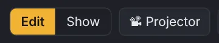
Edit / Show switches the mode; the Projector switch opens the audience window — it glows green while the projector is live.
⌨ Projector and modes
⇧⌘E / ⇧⌘REdit / Show mode (desktop app)
⌘Popen the projector (desktop app)
⇧⌘Pmove the projector to the second screen (desktop app)
Ffull screen on / off, in the projector window
Windows
Plug in the projector and turn it on.
Press Windows+P and choose Extend (not Duplicate). Not showing? Settings → System → Display → Multiple displays → Detect.
Plug in the charger; the desktop app keeps the PC awake in Show mode. Turn on Do not disturb.
Flip the Projector switch on and test with Show and →, as on the Mac.
The same steps are always one click away under ? Help. Without a projector you can still rehearse: the projector window opens as an ordinary window on your own screen.
💡 Tips
Set up and test at the venue before the house opens: plug in, extend, open the projector, press → once.
Bring your own USB-C to HDMI adapter — and a spare. Venue adapters have a way of disappearing.
Turn on Do Not Disturb, so no notification can ever pop up on the audience screen.
Closed the projector window by accident? flipping the Projector switch on again brings it straight back, showing the current title.
A presentation clicker lets you cue while your eyes stay on the score.
No projector yet? Rehearse anyway: the projector window opens on your own screen, and F makes it full screen.
Show time! Running the titles live
The fun part: follow the score and press one key at each cue. STQ takes care of everything else.
Click Show. The slide text can no longer be changed, and the keyboard runs the titles:
⌨ Running the show (Show mode)
→SpacePage Downnext title (a presentation clicker works too)
←Page Upprevious title
B or .blackout: the screen goes empty; press again to bring the title back
Homeback to the start, before cue 1 (empty screen)
The current cue glows gold on the score and the next one pulses; the score scrolls along by itself.
Next → under the preview shows the coming title.
Clicking a cue on the score or a slide's number jumps straight to it.
The arrow keys also work while the projector window is in front.
While the projector is open, the preview mirrors the whole projector screen at its real proportions; on 4:3 and 6:1, thin guide lines (only on your screen) mark the title area.
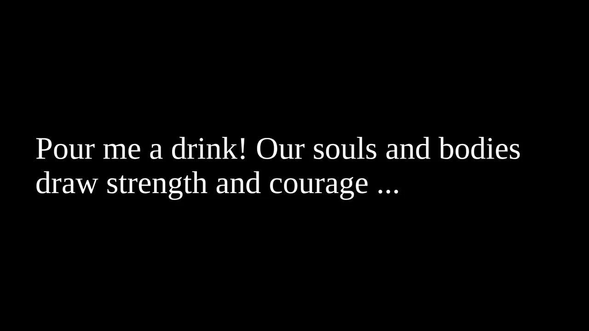
The projector window: only the title, nothing else.
Let STQ follow the music with you
A friendly co-pilot for the booth: it listens along and tells you how many seconds until the next cue — you stay in charge.
Follow listens through a microphone during the performance and counts down to the next cue — “Next cue 7 in 4.2 s”. It never changes a title by itself: cuing stays yours. It learns the music from a reference run, a recording of this production in which every cue has its moment. Each PDF of the score has its own reference run, so Act 1 and Act 2 can be recorded separately.
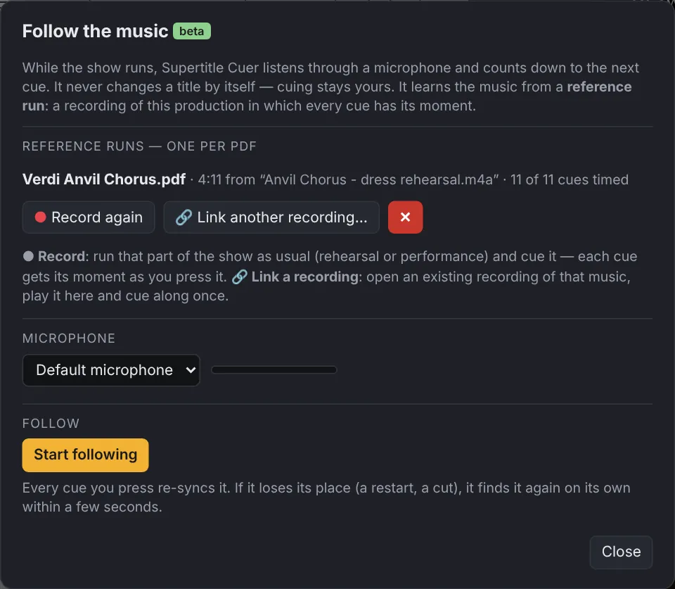
Making a reference run
Either on a PDF's card in the PDFs panel or in 🎧 Follow:
● Record — records that PDF's music through the microphone while you run it (a rehearsal or a performance) and cue it as usual. Every cue you press gets its moment. Press ■ Stop & keep at the end.
🔗 Link… — opens an existing recording of that music (mp3, m4a, wav, aiff, flac, ogg, webm or a video). It plays in the app — with ⏪ 5 s, ▶/⏸, 5 s ⏩, a position slider and 1×, 1.25× or 1.5× speed — and you cue along once. Press ✓ Done at the end.
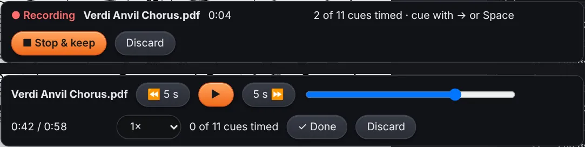
Both switch to Show mode and start just before that PDF's first cue. Only that PDF's cues get times, and only when you move forward: ← to go back doesn't change any times. To fix a cue, go back to the one before it (in a linked recording, rewind the player too) and press → again at the right moment — the last press counts. A recording made in the app is kept inside the project file (about 15 MB per hour); a linked recording stays where it is and only the cue times and the analysis of the music are saved.
Following during the show
Choose the microphone in 🎧 Follow; the meter shows that it hears. Place it where it hears the stage and the orchestra, not the audience.
Click Start following, then run the show as always.
The countdown appears under the preview:
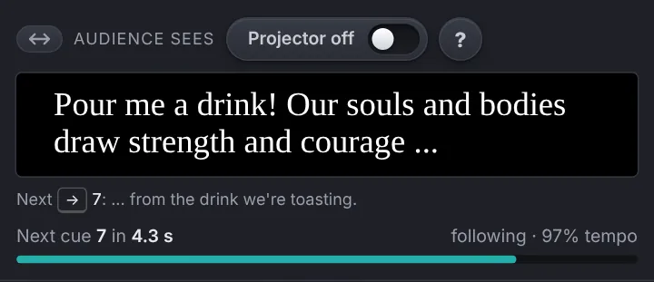
Next cue 7 in 4.2 s
Following; the bar fills towards the cue, turning gold in the last seconds. The tempo compared with the reference run is shown on the right.
Cue 7 now
The music has reached the cue (with “… s late” if you haven't pressed it yet).
Waiting for the music…
A pause, applause or dialogue — it holds its place.
Re-finding the place…
It lost track for a moment (a restart, a cut, a passage played again); it finds its place by itself within a few seconds.
Next cue starts “Act 2.pdf”
The next cue is in another PDF; Follow switches to that PDF's recording when you cue it.
Every cue you press re-syncs it. Follow is new in version 2.0: try it at a rehearsal before relying on it in a performance.
💡 Tips
Record the reference at a dress rehearsal, with the cast and orchestra you will have on the night — the closer the reference, the more smoothly Follow keeps up.
A small microphone pointed at the stage works well; a feed from the sound desk is even better.
Try it at a rehearsal with the countdown in view before relying on it in a performance.
If it says “Re-finding the place…”, just keep cuing — your next cue press puts it right back on track.
Each PDF has its own recording, so you can re-record one act without touching the others.
Saving your work (and finding it again)
One file holds the whole production, so there is nothing to lose track of.
💾 Save (⌘S) and File ▾ → Save As… (⇧⌘S) write the project as one .supertitles file. Double-click it to open it in the desktop app, or open it with File ▾ → Open… (⌘O) or by dropping it on the window. Opening a project locks its cues and slides, so nothing changes by accident.
The app remembers your work between sessions (“Picked up where you left off”), but only a saved file can be moved to another computer or backed up.
Undo⌘Z and Redo⇧⌘Z (Ctrl+Y on Windows) cover cues, slides, and moved or removed PDFs.
The desktop app asks before closing with unsaved changes; “• not saved” next to the project name shows there are some.
File ▾ → New project… starts empty. Remove all cue markers… and Remove all slides… clear one side only.
⌨ Files
⌘Ssave
⇧⌘Ssave as
⌥⇧⌘Ssave as PDF (desktop app)
⌘Oopen
⌘Eexport printable score (desktop app)
⌘Z / ⇧⌘Zundo / redo
The different files Supertitle Cuer can write are explained in the next chapter, Sharing and printing.
Sharing and printing: what each export gives you
Need a copy for the conductor, a printout for the booth, or a list for the translator? There's a one-click export for each.
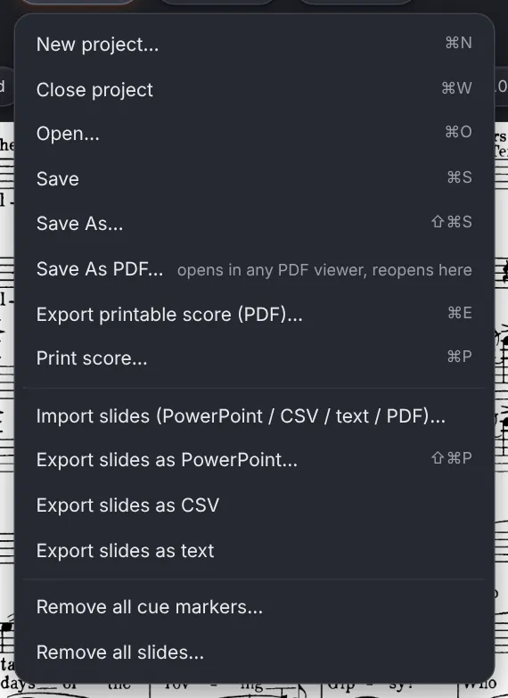
Everything is in the File ▾ menu (and the desktop app's File menu). There are four kinds of file:
Command
File
Holds
Opens again in Supertitle Cuer?
Save / Save As…
Name.supertitles
The whole project
Yes, everything editable
Save As PDF…
Name - supertitles.pdf
The whole project, inside a PDF anyone can read
Yes, everything editable
Export printable score (PDF)…
Name - printable.pdf
The score with numbered cues, and a cue sheet
Only as a plain score
Export slides (CSV)
Name - slides.csv
The titles only
Through Import…
The project file (.supertitles)
Everything about the production, in one file: the score PDF (all its parts, merged), the cues, every title, the display settings, and the reference runs for Follow — including recordings made in the app. This is the file to keep, back up and take to the theatre. A .supertitles file is a PDF inside, but it is meant to be opened with Supertitle Cuer.
Save As PDF
The same complete project — including the cue times, Follow's reference runs and recordings made in the app — saved with a .pdf ending so that anyone can open it in any PDF viewer — Preview, Acrobat, a browser, a tablet. In a viewer it shows the score with the numbered red cues on its pages, followed by the cue sheet. Opened in Supertitle Cuer, it is the full, editable project again. Use it to share a production with a conductor, stage manager or translator who doesn't have the app, without keeping two files.
Export printable score
A plain PDF made for printing: the score pages with the numbered cues drawn on them (at the Cue circle size from Settings), and at the end a cue sheet listing every title next to its number — red numbers for cued titles, grey for titles that have no cue yet. It contains no project data, so it is small and safe to send anywhere; opened in Supertitle Cuer it is just a score. Use it for the booth binder, the conductor's or stage manager's copy, or to proofread the titles on paper.
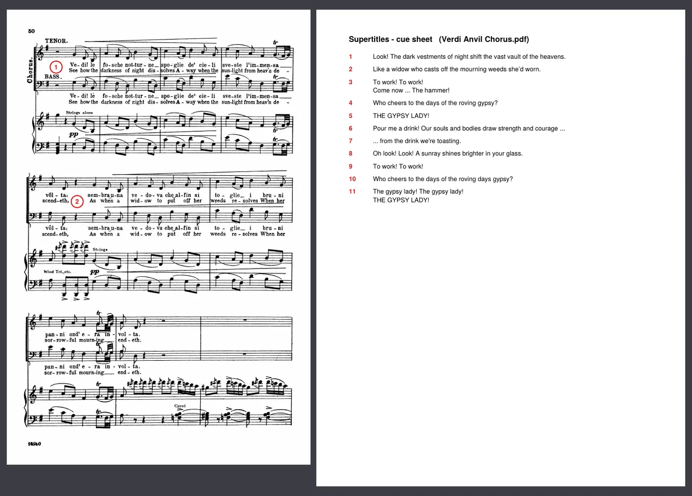
The printable score: a page with its numbered cues, and the cue sheet at the end.
Export slides (CSV)
All the titles as a CSV file: one title per line, each in double quotes, numbered by their order; line breaks inside a title are kept. It opens in Excel, Numbers or Google Sheets (with accents intact), so a translator can work on the titles. Bring it back with Import… (Format: CSV) — choose Replace to swap in the new version. The cues are not affected.
Recordings linked with 🔗 Link… stay where they are on your computer; only the cue times and Follow's analysis of the music are saved with the project.
What if a linked recording moves?
Nothing is lost — Supertitle Cuer never relies on where a linked recording is stored. When you link a recording and cue along, two things are saved inside the project: the moment of each cue in that recording, and Follow's analysis of the music (a compact “fingerprint” taken while it played). Follow only ever uses those two, never the audio file itself; the project doesn't even keep the file's location, just its name. So you can move, rename or delete the recording, or open the project on another computer, and Follow works exactly the same.
You only need the file again to cue along with it a second time — say, to fix a few cue times. Open it with 🔗 Link another recording… from wherever it is now, jump to the passage, press the cue at the right moment and click ✓ Done. Everything you don't replay keeps its timing and its analysis.
Handy keyboard shortcuts
All the shortcuts in one place — keep this page handy in the booth.
On Windows, use Ctrl where the Mac uses ⌘.
Show mode
→SpacePage Down
Next title
←Page Up
Previous title
B.
Blackout on / off
Home
Back to before cue 1
F (in the projector window)
Full screen on / off
Edit mode
←↑→↓
Nudge the selected cue 5 px (after clicking the score)
Shift + arrows
Nudge 25 px
↑↓
Previous / next slide (after clicking the slide list)
Delete
Delete the selected cue (or the selected range of slides)
Shift-click a slide
Select a range of slides
Esc
Stop typing / clear the selection
Anywhere
⌘S / ⇧⌘S
Save / Save As
⌥⇧⌘S
Save As PDF (desktop app)
⌘O
Open
⌘N
New project (desktop app)
⌘E
Export printable score (desktop app)
⌘Z / ⇧⌘Z
Undo / Redo
⇧⌘E / ⇧⌘R
Edit / Show mode (desktop app)
⌘0 / ⌘1 / ⌘2
score view: actual size (100%) / fit the page height / fit the page width
⌘P
Open the projector (desktop app)
⇧⌘P
Move the projector to the second screen (desktop app)
⌘,
Settings (desktop app)
⌘?
Help (desktop app)
💡 Tips
Print the shortcuts page and keep it next to the laptop in the booth.
The show keys also work while the projector window is in front — no need to click back into the main window first.
Most presentation clickers send → or Page Down, so they work straight out of the box.
B (blackout) is your safety net: if a wrong title goes up, press B, find the right one, and bring it back.
Just before curtain up, press Home: the screen starts empty and the first → shows title 1.
On Windows, read Ctrl wherever this guide shows ⌘ — the Help inside the app shows Ctrl for you.
Something not quite right? Quick fixes
Most hiccups have a one-click fix — STQ is rarely more than a click away from working again. Find yours below.
Desktop app: View → Move Projector to Second Screen. Browser: drag it to the projector and press F.
The arrow keys don't change the title
Make sure Show is selected and click once in the main window so it has the keyboard. In Edit mode the arrow keys nudge cues or step through slides instead.
Clicking the score does nothing
The cues are locked (opening a project locks them). Click the red 🔒 Cues locked button over the score (or switch to Edit). In Show mode clicks select cues instead of adding them.
I can't type in, move or delete a slide
The slides are locked: click 🔒 Slides locked above the slides.
A slide is red
Its text is longer than the screen allows; the grey words won't be shown. Shorten it, split it, or use a smaller text size or wider screen shape.
A cue circle is dashed, or a slide says “no cue”
There are more cues than slides, or more slides than cues. Add the missing titles or cues.
Flow mode is greyed out
It switches off once cues are on the score, so cued titles never move.
Follow says “Waiting for the music…” all the time
The microphone hears nothing: check the meter in 🎧 Follow and, on a Mac, System Settings → Privacy & Security → Microphone.